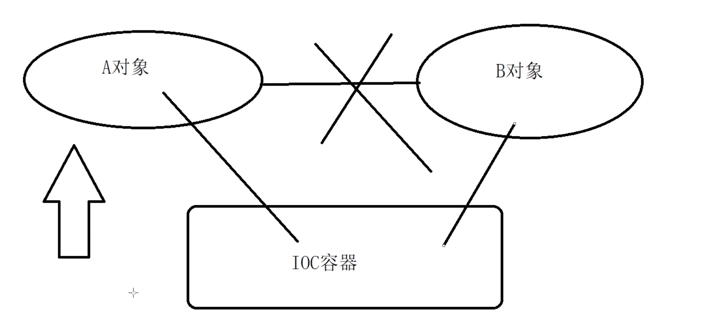

典型模式
- 通过“对象创建”模式绕开 new，来避免对象创建（new）过程中所导致的紧耦合（依赖具体类），从而支持对象创建的稳定。它是接口抽象之后的第一步工作。
典型模式
- Factory Method
- Abstract Factory
- Prototype
- Builder
定义
- 定义ー个用于创建对象的接口，让子类决定实例化哪一个类 Factory Method 使得一个类的实例化延迟（目的：解耦，手段：虚函数）到子类。
什么时候选择工厂类
- 基于这个设计思想，当对象的创建逻辑比较复杂，不只是简单的 new 一下就可以，而是要组合其他类对象，做各种初始化操作的时候，我们推荐使用工厂方法模式，将复杂的创建逻辑拆分到多个工厂类中，让每个工厂类都不至于过于复杂。而使用简单工厂模式，将所有的创建逻辑都放到一个工厂类中，会导致这个工厂类变得很复杂。
结构图

总结
- Factory Method 模式用于隔离类对象的使用者和具体类型之间的耦合关系。面对一个经常变化的具体类型，紧耦合关系（new）会导致软件的脆弱。
- Factory Methodi 模式通过面向对象的手法，将所要创建的具体对象工作延迟到子类，从而实现一种扩展（而非更改）的策略，较好地解决了这种紧耦合关系。
- Factory Method 模式解决“单个对象”的需求变化。缺点在于要求创 建方法/参数相同。
cpp_demo
class Video {
public:
virtual void produce() = 0;
};
class VideoFactory {
public:
virtual Video* getVideo() = 0;
};
class FEVideo : public Video {
public:
void produce() {
std::cout << " FE video " << std::endl;
}
};
class FEVideoFactory : public VideoFactory {
public:
Video* getVideo() {
return new FEVideo();
}
};
class JavaVideo : public Video {
public:
void produce() {
std::cout << " Java video " << std::endl;
}
};
class JavaVideoFactory : public VideoFactory {
public:
Video* getVideo() {
return new JavaVideo();
}
};
class PythonVideo : public Video {
public:
void produce() {
std::cout << " Python video " << std::endl;
}
};
class PythonVideoFactory : public VideoFactory {
public:
Video* getVideo() {
return new PythonVideo();
}
};
int main() {
VideoFactory* f1 = new PythonVideoFactory();
VideoFactory* f2 = new JavaVideoFactory();
VideoFactory* f3 = new FEVideoFactory();
Video* v1 = f1->getVideo();
Video* v2 = f2->getVideo();
Video* v3 = f3->getVideo();
v1->produce();
v2->produce();
v3->produce();
}
golang_demo
package desian_pattern_practise
import "reflect"
type Video interface {
Produce()
}
type VideoFactory interface {
GetVideo() Video
}
type CppVideo struct {
}
func (c *CppVideo) Produce() {
println(reflect.TypeOf(c).String(), "Produce")
}
type CppFactory struct {
}
func (c *CppFactory) GetVideo() Video {
return &CppVideo{}
}
type JavaVideo struct {
}
func (c *JavaVideo) Produce() {
println(reflect.TypeOf(c).String(), "Produce")
}
type JavaFactory struct {
}
func (c *JavaFactory) GetVideo() Video {
return &JavaVideo{}
}
type PythonVideo struct {
}
func (c *PythonVideo) Produce() {
println(reflect.TypeOf(c).String(), "Produce")
}
type PythonFactory struct {
}
func (c *PythonFactory) GetVideo() Video {
return &PythonVideo{}
}
func TestCppFactory_GetVideo(t *testing.T) {
py := &PythonFactory{}
py.GetVideo().Produce()
cpp := &CppFactory{}
cpp.GetVideo().Produce()
java := &JavaFactory{}
java.GetVideo().Produce()
}
python_demo
from abc import ABCMeta, abstractmethod
class Video(metaclass=ABCMeta):
def produce(self):
pass
class VideoFactory(metaclass=ABCMeta):
def get_video(self):
pass
class CppVideo(Video):
def produce(self):
print(type(self).__name__, " produce")
class CppFactory(VideoFactory):
def get_video(self):
return CppVideo()
class JavaVideo(Video):
def produce(self):
print(type(self).__name__, " produce")
class JavaFactory(VideoFactory):
def get_video(self):
return JavaVideo()
class PythonVideo(Video):
def produce(self):
print(type(self).__name__, " produce")
class PythonFactory(VideoFactory):
def get_video(self):
return PythonVideo()
if __name__ == '__main__':
cpp = CppFactory()
cpp.get_video().produce()
java = JavaFactory()
java.get_video().produce()
python = PythonFactory()
python.get_video().produce()
golang_demo
import "fmt"
type ICar interface {
Name()
}
type Factory interface {
CreateCar() ICar
}
type BenzCar struct {
}
func (bc *BenzCar) Name() {
fmt.Println("BenzCar Create")
}
type BenzFactory struct{}
func (b *BenzFactory) CreateCar() ICar {
return &BenzCar{}
}
type BmwCar struct {
ICar
}
func (bc *BmwCar) Name() {
fmt.Println("BmwCar Create")
}
type BmwFactory struct{}
func (b *BmwFactory) CreateCar() ICar {
return &BmwCar{}
}
type AudiCar struct {
ICar
}
func (bc *AudiCar) Name() {
fmt.Println("AudiCar Create")
}
type AudiFactory struct{}
func (b *AudiFactory) CreateCar() ICar {
return &AudiCar{}
}
func TestAudiFactory_CreateCar(t *testing.T) {
audi := &AudiFactory{}
audi.CreateCar().Name()
bmw := &BmwFactory{}
bmw.CreateCar().Name()
benz := &BenzFactory{}
benz.CreateCar().Name()
}
实际应用场景
- 考虑这样一个实际应用：实现一个导出数据的应用框架，来让客户选择数据的导出方式，并真正执行数据导出。
- 通常这种系统，在导出数据上，会有一些约定的方式，比如导出成：cSV 格式、数据库备份形式、Excel格式、XML格式等等。
工程模式的应用IOC/DI
- 依赖注入和控制反转
- 
- 不依赖于AB之间的直接通信
- 通过IOC实现注入
工厂模式的本质
- 依赖倒置原则告诉我们“要依赖抽象，不要依赖于具体类”：不能让高层组件依赖于低层组件，而且不管高层组件还是低层组件，都应该依赖于抽象。何时选用工厂方法模式
- 1: 如果一个类需要创建某个接口的对象，但是又不知道具体的实现，这种情况可以选用工厂方法模式，把创建对象的工作延退到子类去实现
- 2: 如果一个类本身就希望由它的子类来创建所需的对象的时候，应该使用工厂方法模式
IOC注入
#include <iostream>
#include <map>
#include <functional>
#include <memory>
using namespace std;
template <class T>
class IocContainer {
public:
IocContainer() {}
~ IocContainer() {}
template<class U>
void RegisterType(string key) {
std::function<T* ()> function = [] {return new U();};
Register(key, function);
}
T* Resolve(string key) {
if (create_map_.find(key) == create_map_.end()) {
return nullptr;
}
std::function<T* ()> func = create_map_[key];
return func();
}
shared_ptr<T> ResolveShared(string key) {
T* ptr = Resolve(key);
return shared_ptr<T>(ptr);
}
private:
void Register(string key, function<T* ()> creator) {
if (create_map_.find(key) == create_map_.end()) {
create_map_.emplace(key, creator);
}
}
map<string, function<T* ()>> create_map_;
};
struct ICar{
virtual ~ICar(){}
virtual void test() const = 0;
};
struct Bus : ICar {
Bus(){}
void test() const {cout << "Bus::test" <<endl;}
};
struct Track : ICar {
Track(){}
void test() const {cout << "Track::test" <<endl;}
};
int main() {
IocContainer<ICar> carIOC;
carIOC.RegisterType<Bus>("bus");
carIOC.RegisterType<Track>("track");
shared_ptr<ICar> bus = carIOC.ResolveShared("bus");
bus->test();
shared_ptr<ICar> track = carIOC.ResolveShared("track");
track->test();
}
python_demo
from abc import ABCMeta, abstractmethod
import dependency_injector.containers as containers
import dependency_injector.providers as providers
class GasolineEngine(Engine):
pass
class DieselEngine(Engine):
pass
class ElectroEngine(Engine):
pass
class Car:
def __init__(self, engine):
self.engine = engine
class Engine(containers.DeclarativeContainer):
gasoline = providers.Factory(GasolineEngine)
diesel = providers.Factory(DieselEngine)
electro = providers.Factory(ElectroEngine)
class Cars(containers.DeclarativeContainer):
gasoline = providers.Factory(Car, engine=Engine.gasoline)
diesel = providers.Factory(Car, engine=Engine.diesel)
electro = providers.Factory(Car, engine=Engine.electro)
if __name__ == '__main__':
gasoline_car = Cars.gasoline()
diesel_car = Cars.diesel()
electro_car = Cars.electro()
go_ioc
package desian_pattern_practise
import (
"github.com/pkg/errors"
"sync"
)
var (
ErrFactoryNotFound = errors.New("factory not found")
)
type factory = func() (interface{}, error)
type Container struct {
sync.Mutex
singletons map[string]interface{}
factories map[string]factory
}
func NewContainer() *Container {
return &Container{
singletons: make(map[string]interface{}),
factories: make(map[string]factory),
}
}
func (p *Container) GetSingleton(name string) interface{} {
return p.singletons[name]
}
func (p *Container) SetSingleton(name string, singleton interface{}) {
p.Lock()
p.singletons[name] = singleton
p.Unlock()
}
func (p *Container) Register(name string, f factory) {
p.Lock()
p.factories[name] = f
p.Unlock()
}
func (p *Container) Resolve(name string) (ins interface{}) {
factory, ok := p.factories[name]
if !ok {
return nil
}
ins, _ = factory()
return ins
}
import (
"github.com/luci/go-render/render"
"testing"
)
type A struct {}
type B struct {}
func NewB() *B {
return &B{}
}
func TestIOC(t *testing.T) {
container := NewContainer()
container.SetSingleton("a", &A{})
container.Register("b", func() (interface{}, error) {
return NewB(), nil
})
ret := container.Resolve("b")
if ret != nil {
println(render.Render(ret))
}
}